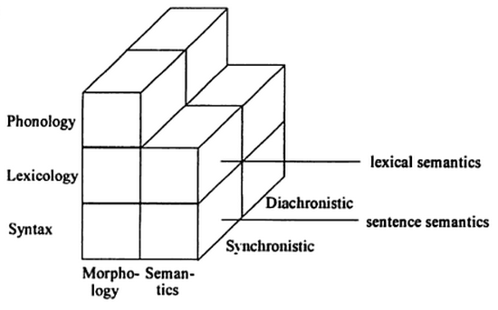
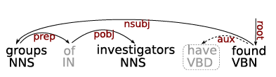
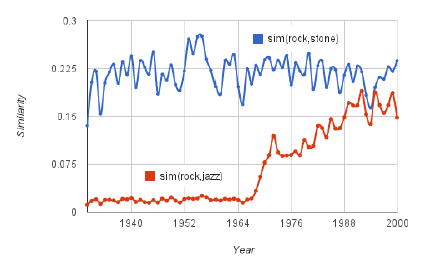
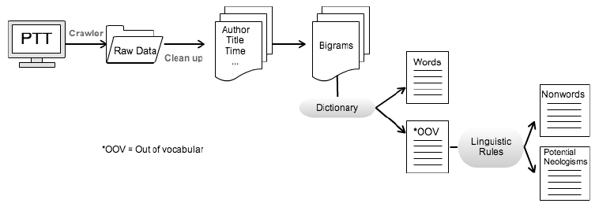
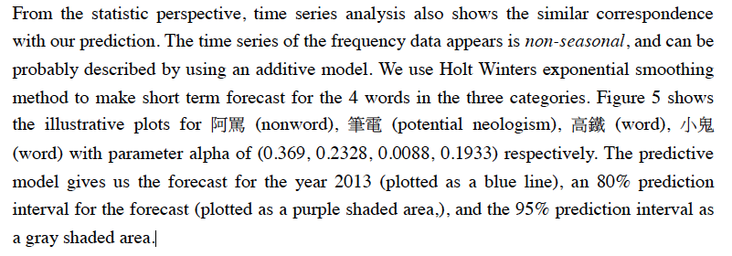

Applied Lexicology with Big Data
A Case Study of Measuring Lexical Aging
謝舒凱 台大語言所 語言處理，知識本體與人文計算實驗室
漢語詞彙語義學研討會(CLSW2014), 澳門大學, June 2014
Outline
- Introduction
- Lexicology with the BIG DATA
- Measuring Lexical Aging as an Example
- Conclusion
Outline
Introduction- Lexicology with the BIG DATA
- Measuring Lexical Aging as an Example
- Conclusion
Lexicalization and Language Change
詞彙與詞彙化的變遷研究
- Language in use is a dynamically developing system adapting to its ever-changing social environment.
- Language change: phenomenon or epiphenomenon (of a static capacity, Lehmann 1993:320)?
- Lexicalization: the process by which new items that are considered 'lexical' come into being (Brinton and Traugot, 2005)
- adoption into the lexicon
- falling outside the productive rules of grammar
The Emergent Lexicon
Lexicon is understood as a finite list of forms and the possibilities for combining them
Functionalistic take on the (Mental) Lexicon (,if any):
- 'our understanding of both language structure and use is enhanced by the recognition that memory for language is highly affected by language use' (Bybee,1998).
- The memory representation of language consists of units that can constitute utterances or intonation units, i.e., not just words, but also phrases and constructions.
It is the formulation that annoies linguists.
The Emergent Lexicon
\[ \mathbf{Change}_{a,b} = \mathbf{A} \succ \mathbf{B} \]
\[ \mathbf{Change}_{a,b} = \mathbf{A} \succ \begin{Bmatrix} A \\ B \end{Bmatrix} \succ \mathbf{(B)} \]
Most attention were paid to the questions "What is in the arrow?" and "How does change come about?"
The Emergent Lexicon v.2 : Before and After
- Lexicalization (and grammaticalization) 談的是如何進場
- 網路時代的海量數據引出了語言單位的生命力指標量度需求（能活多久或為何退場）? BUT note [pressing
p]
Questions to be answered
Big Three (Brinton and Traugott, 2005)
- The constraint problem: what is the set of possible changes and linguistic conditions for change?
- The transition problem: what are the intresting stages that define the path by which A gives rise to B?
- The actuation problem: how does change start, when and where does it start ('actuation') and how does it spread through the system ('actualization')?
Missing
Neologism and Lexicalization
晚近的新詞研究
- Neologisms (new entries in the inventory) can be seen as the results of the conception of lexicalization.
- The production of neologisms encompasses a wide variety of linguistic processes, both sybchronic and diachronic.
- Mechanisms involved: create, modify, combine, or separate existing units, and thus lexicalization would seem to include opposing directions of change leading to greater or lesser dependency and greater or lesser compositionality.
Neologism Classification
[
Renouf's classification2013]: lexical neology (i.e., newly-coined lexical items) and semantic neology (i.e., new sense of word) and grammatical neology (i.e., neologisms that change grammatical class).e.g, Arab Spring; troll (an individual who posts inflammatory, rude, and obnoxious comments to an online community); friend.
lexical neology and semantic neology can be identified in a text corpus at surface level by automatic means (by comparing existing lexicon and discovering the change in collocational environments), while grammatical neology can be identified at a post-processing stage of semantic neology.
複習考 QUIZ
[魯蛇] 屬於那一類新詞?
- lexical neology
- semantic neology
- grammatical neology
韓語：루저남
Ptt有許多網友喜歡諷刺有成就、或日子過得不錯的人，例如：富二代、公務員等「人生勝利組」，而嘲諷者就被反酸是 loser，例如：失業、領22k、交不到女友等，之後就逐漸出現「魯蛇」的諧音用法取代 loser，在2012年年中時已有這樣的用法，在2012年12月到2013年1月間，這個詞突然開始大流行，先是在八卦版出現，之後也在各大板看板出現，成為2013年（適逢蛇年）初最流行的新用語之一(source:wiki)
Neologism Detection in (Computational) Linguistics
You need corpus and lexicon are the prerequisite for an empirical surveys. A reference corpus will make the identification task simpler: An unseen word is matched against the corpus so that it is pinpointed at its first occurrence, and deemed to be a candidate for neologism. (cf. hapax legomena)

Use collocational information to (semi-) automatically determine the candidate's usage and definition.
Outline
- Introduction
Lexicology with the BIG DATA- Measuring Lexical Aging
- Conclusion
Lexicology: the study of the meaning and uses of words (Lipka, 2002)

Lexicology

BIG DATA : What's that?
BIG DATA
BIG DATA
Next time you run a Google search, think about the fact that it's just one of 2 million that Google will receive in that minute. In the same amount of time, Facebook users post 684,478 pieces of content. Crazier still, online shoppers spend an average of 272,070 every minute. That's over 391 million every day — quite the chunk of change. cited from here
BIG Data makes Big Impact ......
Reflections on Thirty Years of Scientific Methodology and the Next Thirty
Google Books for Culturomics
- Google corpus of digitized texts containing about 6% (over 8 million books) of all books ever printed.
Analysis of this corpus enables us to investigate cultural trends quantitatively. We survey the vast terrain of 'culturomics,' focusing on linguistic and cultural phenomena that were reflected in the English language between 1800 and 2000. We show how this approach can provide insights about fields as diverse as lexicography, the evolution of grammar, collective memory, the adoption of technology, the pursuit of fame, censorship, and historical epidemiology.(Science, 331(6014): 176–82, 2011).
- CED?? project??
Google Books for Culturomics
The evolution of grammar
From Sequences to Syntactically-annotated corpus (Lin et al. 2012)
- This new edition introduces syntactic annotations: words are tagged with their part-of-speech, and head-modifier relationships are recorded.
From Sequences to Dependecy-grammar Syntactically-annotated corpus (Goldberg and Orwand, 2013)
- syntactic-ngrams: structures in which the contexts of words are based on their respective position in a syntactic parse tree, and not on their sequential order in the sentence.


DEMO:
中國人愛什麼?
Data Science Analytics (makes advances like never before)
New Methodological Issues [1]: Size
Do we really need (more than) 500 billion words for linguistics?
- e.g., COHA:THE CORPUS OF HISTORICAL AMERICAN ENGLISH vs. [Google Book ngram]
Are there any hard rules regarding how large a corpus ought to be?
For the study of prosody (i.e. the rhythm, stress and intonation of speech), a corpus of 100,000 words will usually be big enough to make generalizations; for the analysis of verb-form morphology (i.e. the use of endings such as -ed, -ing and -s to express verb tenses) would require half a million words. (Kennedy (1998: 68)), while Biber (1993) suggests that a million words would be enough for grammatical studies.
Depending on you research topic!
New Methodological Issues [2]: Unit
A two-edged Sword cuts Both Ways:
How BIG DATA __kill__ Chinese Corpus Linguistics (Hsieh, 2013)
- (with discrete views on the Units of Lexicon)
- 台北市長春藥店; 大都會
這不是朱學恆效應
New Methodological Issues [2]: Unit
A two-edged Sword cuts Both Ways:
How BIG DATA __kill__ Chinese Corpus Linguistics (Hsieh, 2013)
- Vocabulary Growth Curve (V1/Vn) already tells you something wrong.
The BIG LEXICON Project (2014-)
Functional take, again: 'the smaller units familiar from structural analysis are not independent units, but rather emerge from the larger stored units via a network of connections among them'.
A bold (but sincere) proposal:
- Segmentation as annotation (of wordhood)
- Lexical units * Multiple dimensions (so far: 200,000 * 87 matrix)
The BIG LEXICON Project: Variables
| Module.Variable | Description |
|---|---|
concept.sense |
word sense number from Chinese Wordnet, CWN, please help |
concept.gloss |
sense definitions from CWN |
concept.relations |
lexical semantic relations |
emotion.polarity |
polarity of descriptive emotional words |
emotion.location |
location collocates of emotion |
emotion.cause |
cause collocates |
emotion.result |
resulting event collocates |
emotion.time |
time collocates |
frequency.asbc |
frequency of Sinica Corpus |
frequency.plurk |
frequency of Plurk Corpus |
frequency.childes |
frequency of CHILDES Corpus |
frequency.ptt |
frequency of PTT |
AND MANY MORE! modules in progress: 情緒 發展歷程 語義 使用頻率 年紀 關係 性別 教學難易 部首概念 意類 知識本體 社會心理人格 . . . . . . . . . . . . . .
Think BIG With BIG LEXICON (what you'd ever want to know about the Lexicon)
---
Question:
---
Brainstorm: what are some of the trends/corelation
that you might want to explore? What additional
variables would you need to create? What other
data sources might you want to use? Pair up and
brainstorm for 1 minute.
We believe the BIG Lexicon should be the new infrastructure for linguistics, and invite you to join in us.
Outline
- Introduction
- Lexicology with the BIG DATA
Measuring Lexical Aging- Conclusion
Not uxorious anymore?
press p
Modeling Neologistic Behavour [1]
Stage in Life-cycle (Renouf, 2013)
- Increase in frequency: gradual, or sudden if in vogue
- Orthographic adjustment
- Lexical productivity
- Creativity
- Settling down
- Obsolescence
- Death
- Re-birth or revival
Modeling Lexical Aging: First try (Liu,Hsieh and Prevot, 2013)
- Proper nouns are ruled out, for they are mostly propelled into the media glare due to a real-world event ot popular preoccupation.
- PTT-based (2015-2012, 八卦版+就可版+笨版), preproceesed.

- Time series predictive model against human judgement.
PTT Corpus

Results

- These large, short-term fluctuations add an important new dimension to the study of the long-term dynamics of language, as any novel expression must survive in the short term to survive in the long term. (Altmann, 2011)
Results
Modeling Lexical Aging: Our Second Comings
Use
google book ngramas training data (to infer the laws), andpttas test data.Previous efforts exploit the syntagmatic patterns of a candidate neologism (e.g., via
collocate profile).we propose to incorporate paradigmatic patterns (via
social networkof the candidate).Evaulate the preditions against large-scale human jugements (via questionnaire web application or APP games)
Modeling Lexical Aging: Our Second Comings
Special considerations
詞彙不像人，可以離群索居，成就自己的意義。詞彙的意義是透過系統間的關係相對定義出來的。 因此詞彙的社會行為。(以魯蛇為例，利用批踢踢找出共現，算出相𨶙詞彙，算出依存度)。
Frequency Diversity (e.g., the dissemination of words across individuals/generations/topics/)
Strength of Ties
Niche (when different forms compete to express the same meaning)
**Distributional Semantic Model**
Outline
- Introduction
- Lexicology with the BIG DATA
- Measuring Lexical Aging
Conclusion
Where do we go from here?
- 大數據正在改變語言學 Big data help us understand the nature of linguistic and cultural dynamicality.
- 詞彙生命量度是個測試好例子 Measuring/modeling Lexical aging involves every aspects of lexicology.
- 大詞庫將是必備工具箱 We hope that this study could serve as an invitation to lexicologists in exploring their lexical data beyond micro-levels of analysis, and using big data as the 'toolkit' to map the contours of lexicology.
Implications and Applications
- 模擬語言變遷的機會 Modeling lexical changes
- 重估新詞的地位 OOV reestimation in NLP
- 客觀化辭典收詞標準Measures are useful for lexicographers, translators and terminologists.
- Traditional ways to decide which words to include in the dictionary and to determine what they mean could be improved/enhanced with computational linguistics.
OH, MY, "Won’t *twerking* just go away?"
or is it *twerking* its way into the dictionary?
[press p to look into story]
Acknowledgements
王伯雅, 劉純睿, Ramnathv (Slidify)
Reference
Altmann, E.G., Pierrehumbert, J.B., Motter, A.E.. Niche as a determinant of word fate in online groups. PLoS ONE 6(5), e19009 (2011).
Altmann, E.G. Zakary L. Whichard, Motter, A.E.. Identifying Trends in Word Frequency Dynamics. J Stat Phys151 (2013).
Renouf, Antoinette. A Finer Definition of Neology in English—The Life-cycle of a word. Studies in Corpus Linguistics 57. (2013).
Petersen, Alexander et. al. Statistical Laws Governing Fluctuations in Word Use from Word Birth to Word Death. Scientific Report 2:313. (2012).